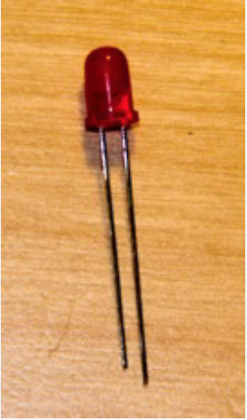
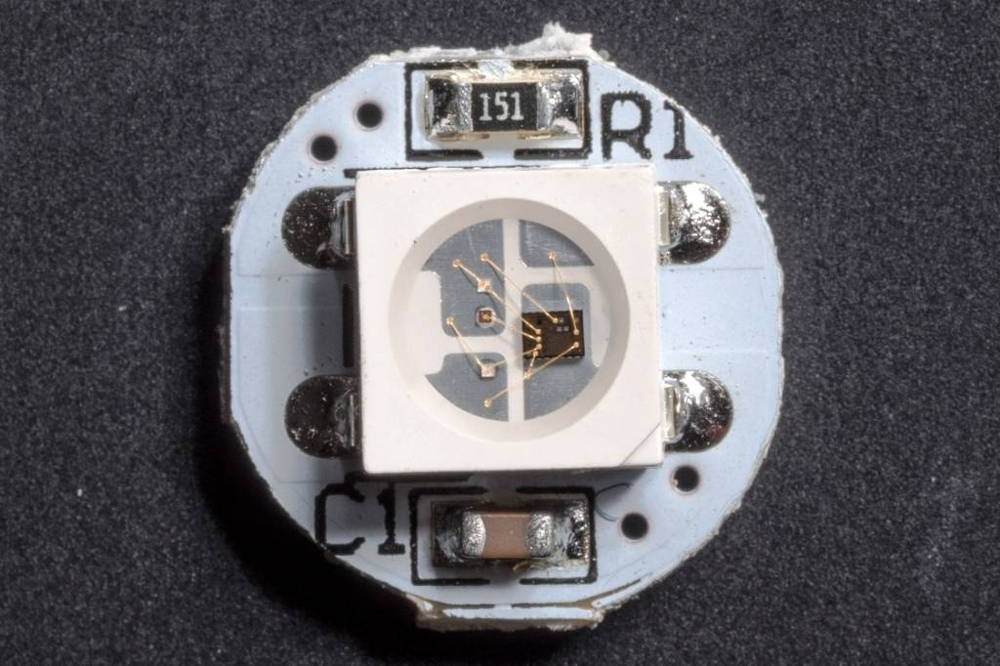
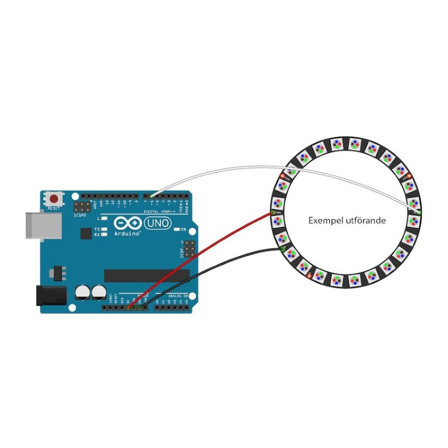
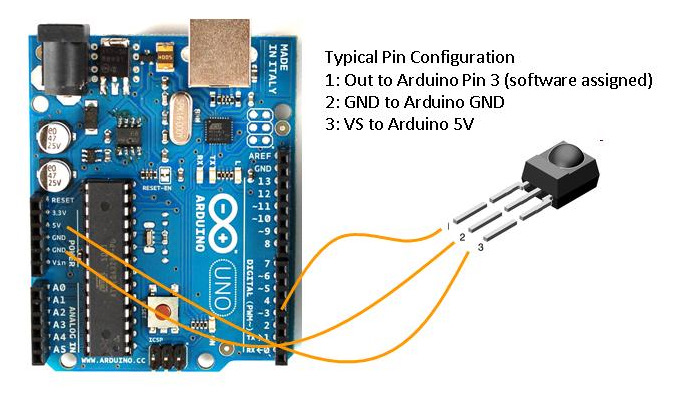

AAU:Physical Interactive Systems Day 4
AAU:Physical Interactive Systems Day 4
AAU:Physical Interactive Systems Day 4
AAU:Physical Interactive Systems Day 4
- Soldering
- Introduction to addressable LED's
- Programming exercise: Writing custom functions
- Sensor lecture
- Detecting proximity with the HC-04 ultrasonic rangefinder
- Graphing sensor data with the ADXL345 Accelerometer
- Liquid Crystal Display
Topics for Today:
hackster.io
Adafruit
www.sparkfun.com
www.seeedstudio.com
Introduction to Addressable LEDS


Basic LEDS Need a lot of Wiring
Addressable LEDs provide circuitry to communicate serially

Each LED has a chip to receive, decode, drive LED’s and propagate data
They are chainable, fairly cheap and have their own resistors etc..

You can drive 10000's from 1 microcontroller
Adafruit has branded these Neopixels

You can get them for half the price on Ebay as ws2812's

These have a 5v, GND and DIN pin
Connect 5v to 5v, GND to GND and DIN to Pin6
Import the NeoPixel Library

Import the NeoPixel Library

Let's try some examples and write our own code!
upload sad_pixel
FastLED
Fast LED LibraryFastLED-Demos
APA102
APA102 aka “Superled”Remote Control

Hook Up the IR reciever
- IRL remote
Install IRLRemote
Important install version 1.7.4
Receive_Custom_neo.ino


Adafruit
Sparkfun
DFRobot
Seeed Studios

The HC-SR04 ultrasonic sensor uses sonar to determine distance to an object like bats do. It offers excellent non-contact range detection with high accuracy and stable readings in an easy-to-use package. From 2cm to 400 cm or 1” to 13 feet. It operation is not affected by sunlight or black material like Sharp rangefinders are (although acoustically soft materials like cloth can be difficult to detect). It comes complete with ultrasonic transmitter and receiver module.

Upload the Arduino sketch in hc-04-code/hc-04 and then check the output in the serial monitor
- Close the serial monitor and open the serial plotter from te tools menu
- Run Sensortest from the Examples adxl345_plotter
ADXL354 accelerometer

An accelerometer is an electromechanical device that will measure acceleration forces. These forces may be static, like the constant force of gravity pulling at your feet, or they could be dynamic - caused by moving or vibrating the accelerometer.By measuring the amount of static acceleration due to gravity, you can find out the angle the device is tilted at with respect to the earth. By sensing the amount of dynamic acceleration, you can analyze the way the device is moving.
ADXL354 accelerometer

- Connect
- GND to GND
- 3v to 3v
- SCL to A5
- SDA to A4
- Open the Library Manager in Arduino
- Install Adafruit ADXL Library
- Install Adafruit Universal Sensor Library
- Run Sensortest from the Examples
- To plot multiple values in the serial potter we seperate them with a space
- Run Sensortest from the Examples adxl345_plotter
- LCD RS pin to digital pin 12
- LCD Enable pin to digital pin 11
- LCD D4 pin to digital pin 5
- LCD D5 pin to digital pin 4
- LCD D6 pin to digital pin 3
- LCD D7 pin to digital pin 2
Additionally, wire a 10k pot to +5V and GND, with it's wiper (output) to LCD screens VO pin (pin3). A 220 ohm resistor is used to power the backlight of the display, usually on pin 15 and 16 of the LCD connector